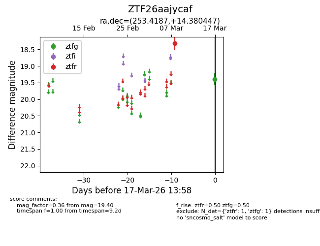
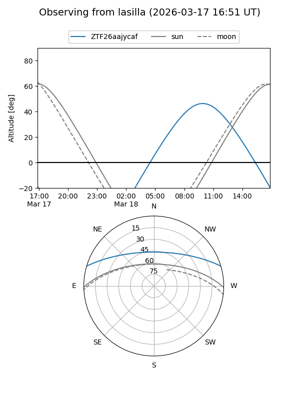
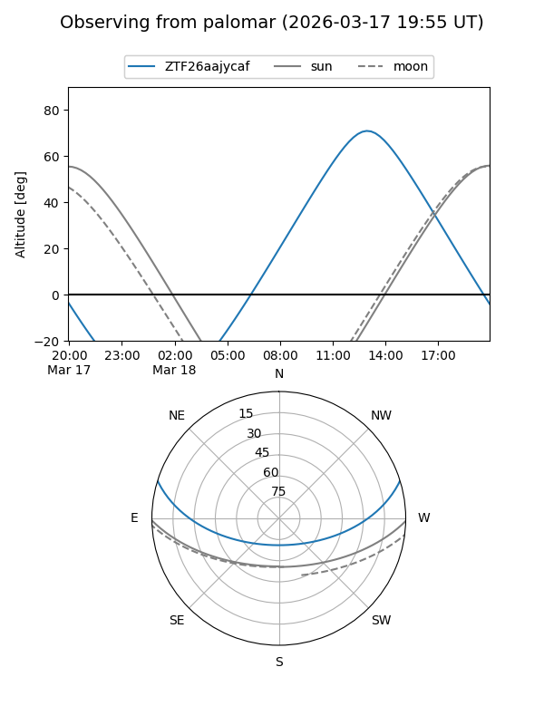

ZTF26aajycaf
Target ZTF26aajycaf at 2026-03-17 14:00
Aliases and brokers:
FINK: link
Lasair: link
ALeRCE: link
alt names
ZTF26aajycaf (ztf,fink_ztf)
Coordinates:
equatorial (ra, dec) = 253.4187,+14.38045
equatorial (HMS+DMS) = 16:53:40.48,+14:22:49.61
galactic (l, b) = (33.1990,+32.47912)
Flags:
Photometry:
last ztfg=19.40, ztfr=18.32
1 ztfg, 1 ztfr detections
Lightcurve

Visibility


Additional plots